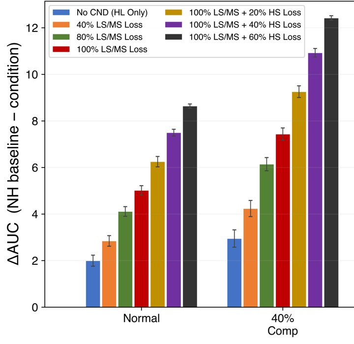
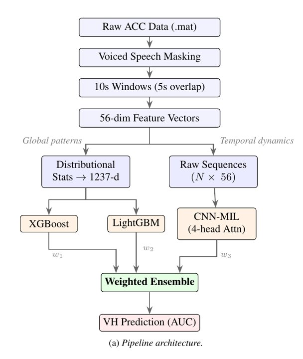
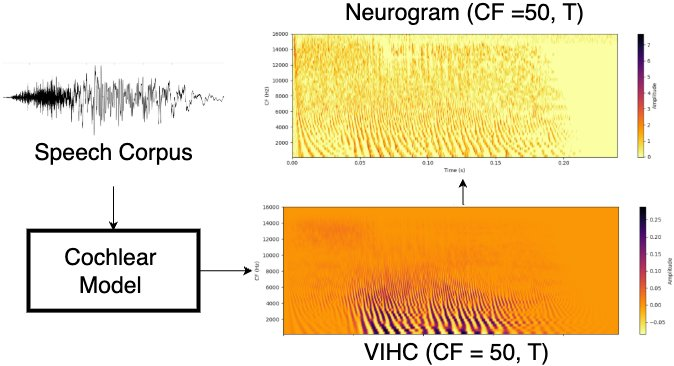
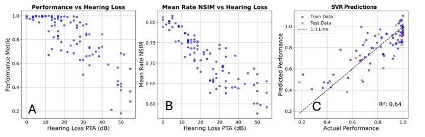
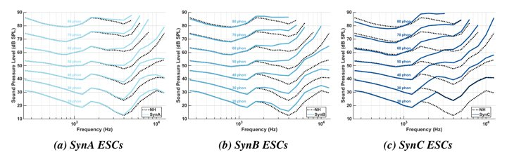
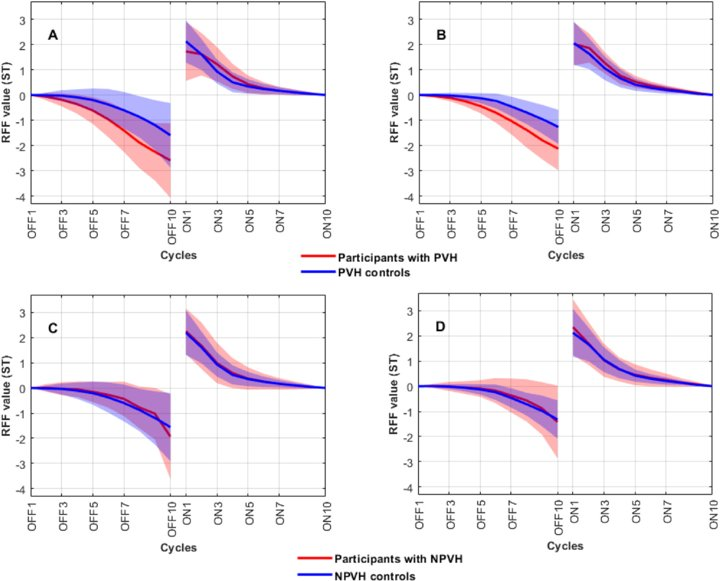

About
I am a PhD candidate at Harvard University, working in the OtoBiomechanics Lab at Massachusetts Eye and Ear / Harvard Medical School with Prof. Sunil Puria (Google Scholar).
I work at the intersection of acoustics, machine learning, and auditory neuroscience. I study the perceptual effects of cochlear neural degeneration (CND) by building deep neural networks on biophysically plausible representations of the auditory system. I then use these models to build personalized hearing-aid optimization models and denoising algorithms. More broadly, I am interested in machine learning for audio and representation learning for biological systems.
Before my PhD, I was a Fulbright Scholar at Georgia Tech, where I studied finite element modeling and cochlear mechanics. I also spent six years in industry (2014 to 2018 and 2020 to 2022) as a machinery-diagnostics engineer and product manager. In summer 2026 I was a Research Scientist Intern in Audio ML at Meta Reality Labs.
When I'm not working, I like to hike, work out, and read.
Research interests
News
- Nov 2026: Invited talk at the National Acoustic Laboratories, Australia.
- Sep 2026: New preprint with NAL on speech probes for cochlear synaptopathy.
- Aug 2026: Finished my Research Scientist internship at Meta Reality Labs.
- 2026: Neck-Learn ranked 3rd and 5th in the Interspeech 2026 NeckVibe Challenge.
- 2026: 1st place, Poster Blitz, ARO MidWinter Meeting.
Selected Publications






Also
- Inferring Neural Degeneration from Speech Confusion Patterns using Self-Supervised Learning. Cheema et al. Under review, 2026.
- Simplified Vocal Efficiency Metrics Normalize Following Voice Therapy in Subgroups of Patients With Nonphonotraumatic Vocal Hyperfunction. Zhu, Cheema, et al. AJSLP, 2025.
- Cochlear Mechanics Measurements for Hearing Aids. Cheema & Puria. Mechanics of Hearing, 2024.
Experience
Research
DNN and biophysical auditory models, psychophysics, and simulation-based inference for personalized hearing-aid fitting.
Speech enhancement for wearables, VAE representations of hearing loss, and speech-intelligibility modeling.
Machine-learning voice biomarkers for vocal hyperfunction from neck-surface accelerometer recordings.
Finite-element modeling of nonlinear cochlear mechanics: two-tone suppression and distortion products.
Industry
Education
Talks & Presentations
Invited talks
- Estimating Cochlear Neural Degeneration and Optimizing Hearing Aids using Cochlear Models. National Acoustic Laboratories, Australia, November 2026.
- Virtual Listener Based Machine-Learning Optimization of Hearing-Aid Processing. Sonova, June 2026.
- Virtual Listener Based Machine-Learning Optimization of Hearing-Aid Processing. Acoustical Society of America Meeting, May 2026.
- Invited to speak at Forum Acusticum 2026 (declined).
Other talks
- Characterizing Vocal Hyperfunction Using Ecological Momentary Assessment of Relative Fundamental Frequency. Voice Foundation Annual Symposium, Philadelphia, 2024. Best Student Paper Award.
- Mass Eye and Ear Salon Talk, 2024.
- Harvard SHBT Retreat Talk, 2024.
- Harvard SHBT Retreat Talk, 2023.
Posters
- Hearing Aids Optimization using Cochlear Model. IHCON, 2026.
- Model-Optimized Speech-in-Noise Test as a Behavioural Marker for Hidden Hearing Difficulties in Adults with Normal Audiograms. IHCON, 2026.
- Utilizing Information Theoretic Approach to Study Cochlear Neural Degeneration. ICASSP, 2026.
- Developing Diagnostic and Amplification Strategies to Compensate for Cochlear Neural Degeneration. ARO MidWinter Meeting, San Juan, 2026.
- Using Neurogram Similarity Index Measure (NSIM) to Model Hearing Loss and Cochlear Neural Degeneration. Interspeech, 2025.
- Modeling Performance on Speech Tasks Using Neurogram Similarity Index Measure. ARO MidWinter Meeting, Orlando, 2025.
- Modeling Speech Intelligibility at the Inferior Colliculus Level. ASA Meeting, Honolulu, 2025.
- Understanding Sound Source Localization using Manifold Learning. ASA Meeting, Honolulu, 2025.
- Modeling the Effect of Auditory Nerve Synaptopathy on Hearing in Noise. IHCON, 2024.
Honors & Awards
- First Place, Poster Blitz, Association for Research in Otolaryngology, 2026
- NeckVibe Challenge, Interspeech 2026: Rank 3 (NPVH, AUC 0.848), Rank 5 (PVH, AUC 0.879)
- Eaton-Peabody Scholarship, Mass Eye and Ear, 2026
- ARO Travel Award, Association for Research in Otolaryngology, 2026
- ASA Travel Award, Acoustical Society of America, 2025
- Best Student Paper Award, Acoustical Society of America, for "Modeling Loudness Contours to Determine Human Auditory Nerve Fiber Distribution and Cochlear Nerve Degeneration" (with Kai Burian and Sunil Puria)
- Best Student Paper Award, Voice Foundation Annual Symposium, 2024, for "Characterizing Vocal Hyperfunction Using Ecological Momentary Assessment of Relative Fundamental Frequency"
- Nelson Kiang Scholarship, Mass Eye and Ear, 2024
- Fulbright Scholar, U.S. Department of State, 2018 to 2020
- Chancellor's Silver Medal, NUST, 2014
Students Mentored
Co-authored "Modeling Loudness Contours to Determine Human Auditory Nerve Fiber Distribution and Cochlear Nerve Degeneration" (POMA, 2025), winner of an ASA Best Student Paper Award.